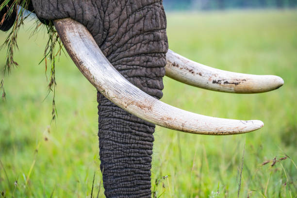

Elephant tusks evolved from teeth, giving the species an evolutionary advantage.
They serve a variety of purposes: digging, lifting objects, gathering food, stripping bark from trees to eat, and defense.
The tusks also protect the trunk—another valuable tool for drinking, breathing, and eating, among other uses.